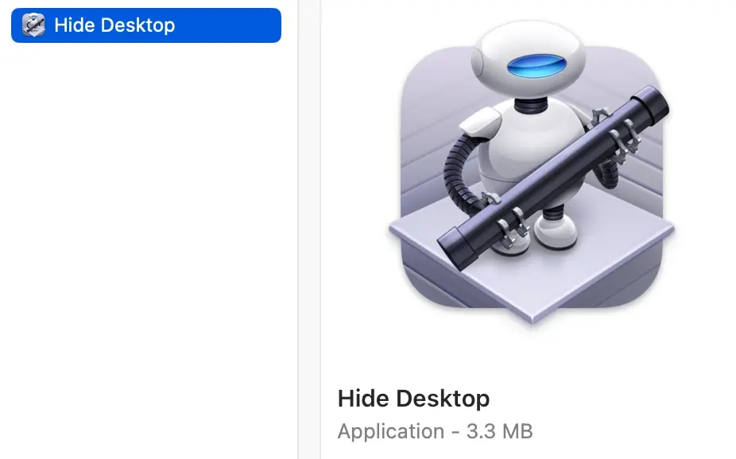

Nov 1, 2024
Hide Desktop macOS Shortcut
A quick Automator script I use almost daily to toggle my desktop contents. Updated for desktop widgets.
I often find myself needing to hide my desktop icons. Whether for a demo for CodeEdit, sharing my screen for work, or any other task that requires sharing my screen, I prefer to have my desktop contents hidden.
So here's a really simple Automator script to toggle your desktop. To show your desktop items again just run the script! Note: it kills Finder, so any finder panels you have open will be closed when this is run.
Throw this in a Run Shell Script action in a new automation:
previous_val=$(defaults read com.apple.finder CreateDesktop)
if [ "$previous_val" = "true" ]
then
defaults write com.apple.finder CreateDesktop 'false'
defaults write com.apple.WindowManager StandardHideWidgets -int 1
else
defaults write com.apple.finder CreateDesktop 'true'
defaults write com.apple.WindowManager StandardHideWidgets -int 0
fi
killall Finder
Then I like to export it to an application so I can run it easily from Spotlight
Demo Video:
Nov 1, 2024